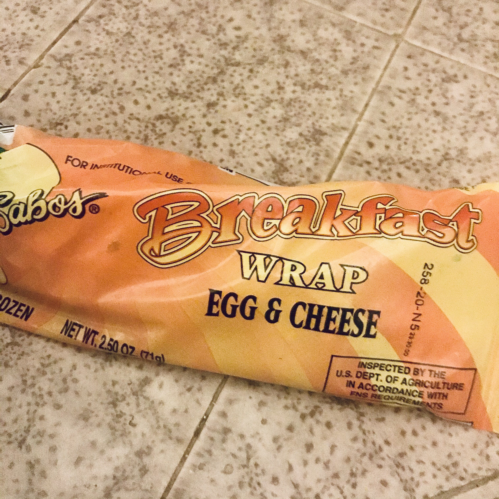

LAB 6
The Subject
The end goals are to "create an html file and then style it with a CSS file"
The STRUGGLE
We'll see, the night is young. The first contestant is when it comes to the forms in task 2. I want to figure out how to get them to display the word "username" and "pasword" inside of the boxes but I don't think I will be figuring this out today. I FIGURED IT OUT! Placeholder attribute! I love playing around! How do I make it an option to deselect a radio, and why doesn't placeholder or value work with radios and checkboxes? I believe I shall leave this for tomorrow, because I like it when Prof Modes explains what I am doing wrong. Either way they're there, just not as pretty as I wish they would be. How to make them verticle as well. I played around with the CSS and I can't wait to learn more about it. I couldn't figure out how to change font color, but this I won't ask because I assume we will learn in the near future.
The Result
I think I did pretty well, everything is on here so...
The Egg and Cheese Breakfast Wrap
The kids have been bringing home their lunches from school and I just KNEW I not let this opportunity go! So I am going to review them. The texture is horrible, the tortilla is rock hard but the eggs are always so soggy and rubbery. The taste is even worse, you'd be lucky to have a condiment with you to cover up the taste of wet cardboard, sadly stale cheese, and watered down egg. The smell is the best part about it, because it's so stale it hardly smells. Of course if you get up close and personal, it smells... nauseating.